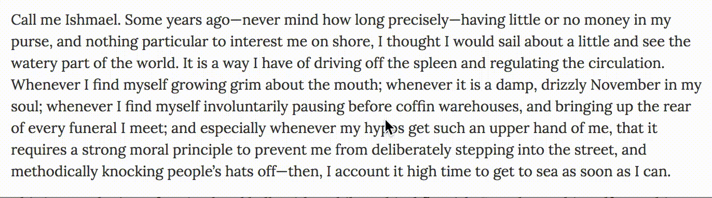
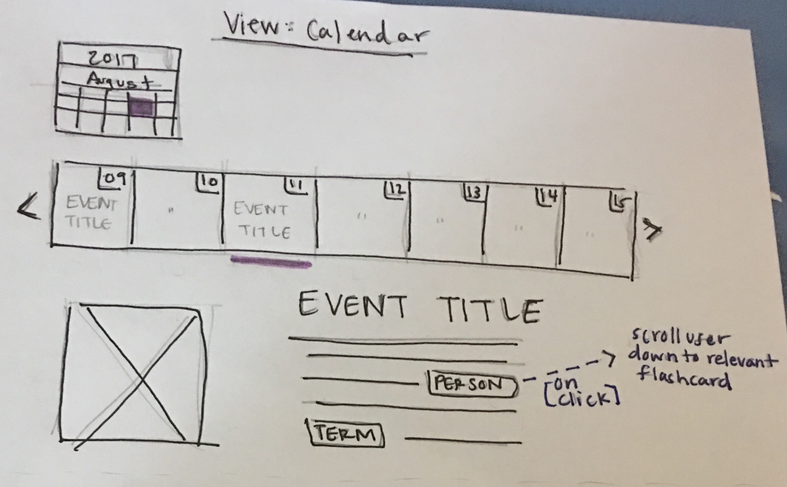
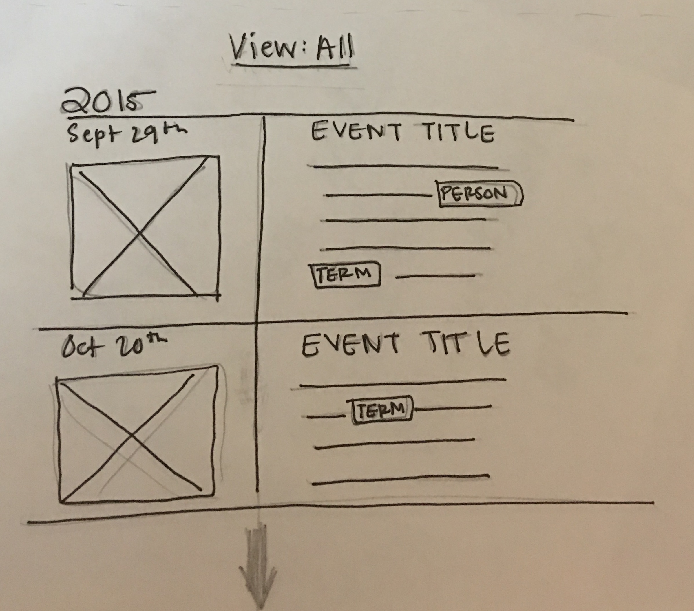
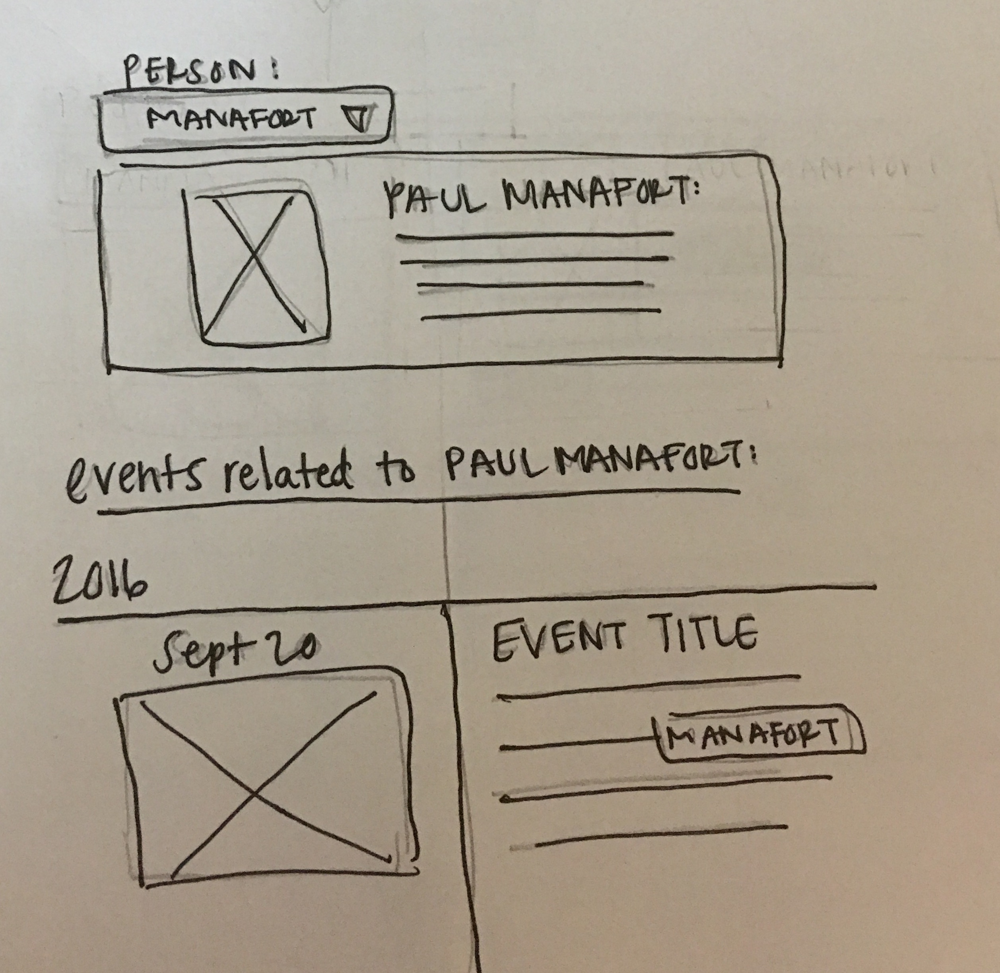

The Russia Investigation
As with any project that has to do with audiences, I would start by reaching out to the audience I was trying to serve. In the following report, I will go through a “hackathon” of sorts that I did in the couple of days I had to complete this prompt.Step One: Reaching out to the Audience
I talked to five readers and had them read this article related to the Russia imbroglio to gauge their understanding of it and try and find sticking points that could be better explained with tools and visuals that that NPR Visuals team could tackle. Below I have replicated the four interviews into four “personas”. Ideally, these personas would be developed from several interviews over a longer period of time with more in-depth questions.
Rafael
“This is all just politics”
- Post-graduate degree, fiscally liberal, socially conservative, Latino man. Immigrated to U.S. as a young adult. Software Engineer. English is his second language. 53 years old.
- Consumes media primarily through broadcast CNN, NPR in the car and a BBC app on his Android phone.
- Is critical of the media he consumes, questions the reporting process of the story and understands and questions the biases of the sources in stories.
- His overall thoughts on the article:
- Paused at the word “rescinded” at the beginning of the article, had to think about what the word meant.
- “It doesn’t appear like Grassley gained anything out of these so-called ‘negotiations’”. Wondered how the negotiations occurred, what was said.
- Thinks there isn’t much newsworthy about the story, it maintains the status quo of “it all being about politics.”
Diane
“Aren’t articles supposed to be written at a 5th-grade reading level?”
- Associate’s Degree, grew up in inner-city Pittsburgh and now lives in an upper-class suburb. Nurse. Fiscally and socially liberal with a few social conservative exceptions. English is her first language. White. 47 years old.
- Consumes media primarily through broadcast CNN and the Yahoo! News homepage. Will occasionally listen to NPR in the car.
- Reads quickly and usually takes the articles as they’re written without much analysis.
- Her overall thoughts on the article:
- Was frequently confused by complex sentence structures, such as:
- “But after issuing subpoenas for Manafort and Simpson after their attorneys suggested they didn't want to cooperate, Grassley said he was satisfied with the resulting negotiations.”
- She wasn’t sure what a “dossier” was, and was sure that a lot of readers wouldn’t know, either.
- She already knew who Manafort was from previous news consumption, but regarding Simpson: “I don’t know who he is, and it seems complicated as to who he is, and how he’s connected to everyone else.”
Peyton
“The newsworthiness of this article isn’t really shining through.”
- Current undergraduate senior, recently became a journalism major. Grew up in rural Virginia and now lives in a college town. Fiscally and socially liberal. Gay. Speaks Spanish and English — English is his first language. White. 21 years old.
- Consumes media primarily through Twitter and Facebook. Reads a lot of left-leaning news especially related to social issues.
- Critical of the news he reads, as taught to him by his journalism curriculum.
- Overall thoughts on the article:
- Was unsure what the newsworthiness of the article was — felt that it was unclear what happened in the meeting between Manafort, Simpson and Grassley.
- Didn’t know who Manafort or Simpson were before reading, but felt that Simpson’s character was not explained well.
- Doesn’t know what the dossier is, and thinks “most people don’t know what that means.”
- Would have liked historical context as to when other subpoenas have been rescinded from the senate judiciary committee.
Kate
“We want to trust in the investigation...I think it needs to be transparent.”
- Recent graduate in web development/journalism. Grew up in very liberal suburb in an impoverished family. Fiscally and socially liberal. Gay. Speaks English and Japanese — English is her first language. White. 22 years old.
- Primarily consumes media through Twitter and Facebook. Doesn’t read news frequently.
- Overall thoughts on the article:
- Felt keeping track of characters in the story was most difficult part of the article for her. Some sentences were confusing. Ex:
- “Former campaign boss Paul Manafort and Glenn Simpson, founder of the political research shop Fusion GPS…”
- What she concluded from article: “Two people who were part of (Trump’s) campaign were originally subpoenaed but they decided not to testify and to instead negotiated behind closed doors.”
- Thinks it’s worrying that there were negotiations behind closed doors, wants more transparency.
- Would like more explanation of technical terms (ex: imbroglio, subpoena, dossier)
Madison
“...I think the article explained it well enough.”
- Recent graduate in chemistry, applying for medical school. Grew up in fairly liberal suburb in upper-middle class. Fiscally and socially liberal. Speaks English and Spanish — English is her first language. White. 22 years old.
- Reads the local newspaper every morning and occasionally reads the NYT online. Also gets news through Facebook.
- Overall thoughts on the article:
- She hasn’t been following the Russia imbroglio — had never heard of Manafort or Simpson — but feels that the article did a good job of explaining everything.
- Appreciated the length of the article.
- Thinks there should have been another perspective in the story on the opposite side of Grassley. “Maybe (the reporter) doesn't have the information...but there has to be someone out there who thinks this is shady.”
- Would have liked more background info on Manafort and Simpson and their alleged role in the imbroglio.
Overall Conclusions from the Interviews:
The sticking points that the readers ran into can be categorized into 5 issues:- Complex sentences (4/4)
- Confusing vocabulary (3/4)
- Unsure of newsworthiness (2/4)
- Not sure who is who (2/4)
- Needed more background (1/4)
Step Two: Developing a Coverage Strategy
Research/Reporting
Based on the most prevalent issues found in Step One, I created a quick prototype of two possible design solutions to help readers keep track of complex topics and people.
In my opinion, NPR already has great content that breaks down the complexity of the Russia imbroglio, so the first step is just a matter of connecting that content throughout the site (ideally through add-ons in the CMS so reporters can get involved in including this content in their stories, but that is probably outside the purview of the Visuals team).
For instance, the Trump-Russia flashcards are a great method of keeping track of elements of the investigation, but they would serve audiences better by being integrated into stories:

And stories that help explain perspectives from different sources, which may not be appropriate in articles such as the example used, which are more for informing on the facts, could be linked out with the appropriate context highlighted:

I think one of the challenges, which reporters run into every day, is determining what the lowest bar is for explaining content. I considered creating an “outline” view of articles, as seen here:
NEED TO CREATE THISBut it seemed like at that point the content may be repetitive or insulting readers’ intelligence. What perhaps might be better in a situation where sentences are too complex is to have some kind of reader feedback system that tells reporters when their grafs are a little too heavy.
There could be a limited number of articles related to the Russia beat every day (or even just once a week, maybe on a day when readership is highest) that allow readers to highlight phrases or sentences that confused them and maybe even offer notes.
An example of annotations using AnnotatorJS
Those annotations could then be saved in JSON and presented in a spreadsheet for reporters to take a look at and adjust their writing accordingly. There would be a lot of challenges with this, including getting reporters and readers to buy in to the experiment, but it could help reporters better understand, and therefore expand, their readership.
Visualizations
One of the first ideas that occurred to me when I read the original question was to have a homepage for the Russia story that collected the key information readers needed to know in various visualizations. A timeline, a web of key players and how they’re connected, explainers of key procedures (such as how the Senate Judiciary Committee functions), etc. But this seems like such an obvious tool that it was probably already a discussion in the newsroom and there must be a reason it hasn’t been done yet, so I’ll skip over that idea for now.
There is more NPR visuals could do to include extra layers of information, context, to the players in the Russia story. A great example is the breakdown of Trump’s cabinet that was done. One of the strengths that the Visuals team has is being able to provide context using datasets. What datasets can we gather that would provide more information about key players? Some examples:
- Financial records and campaign finance records, if applicable
- Including lobbying records if a key player is directly affiliated with a particular company that has donated money to Trump or other important candidates
- Where they’ve lived (do they have indications of loyalties to these geographies?)
- Work history, esp. previous administrations they’ve worked for
- A collection of important quotes/stances taken by key players
- Criminal history, lawsuits
All of the information gathered should also be made available to reporters in a readable format (perhaps Google Sheets).
As for the aforementioned landing page, I think the center of it would have to be a timeline of sorts. Maybe it could be filtered by a calendar view, and it could be on the same page as the flashcards so they can easily be linked for a deeper explanation if necessary.
So on the top of the page, above the flashcards, would be a timeline with different view options we could try out in design. Maybe a calendar view:
And a "view all":
Maybe it could be filtered by people or other tags as well and show the relevant flashcard for the filter (this would help give readers more context for events as they come to the page and have specific questions):
Part Three: My Ideal Role in this Effort
I’d love to work on the visualizations and data-driven elements of this effort. I’m trying to get better at d3, python (especially using pandas) and design in general, so anything that can help me better my skills in those areas would be great. Otherwise, I’m able and willing to work in any step of the process I’ve described in this document.